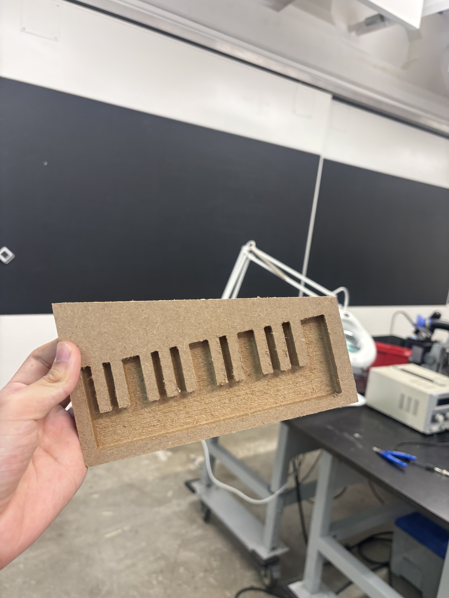
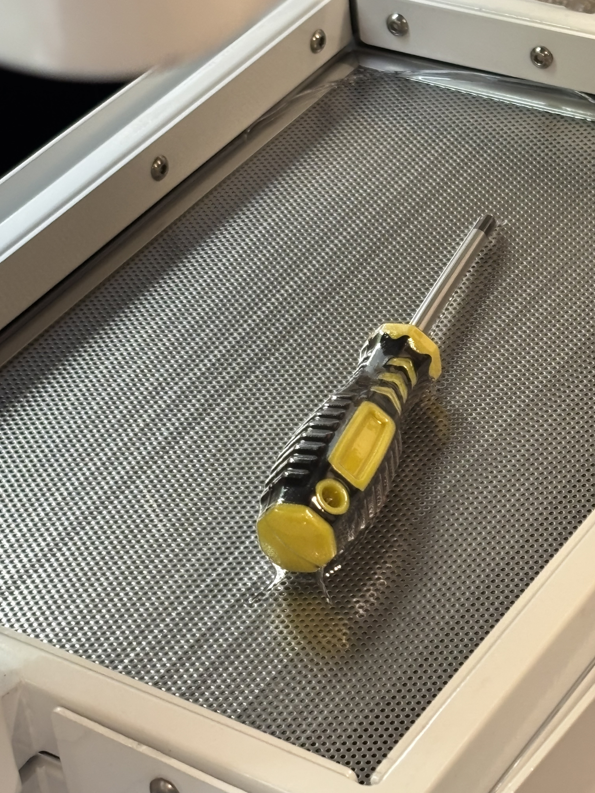
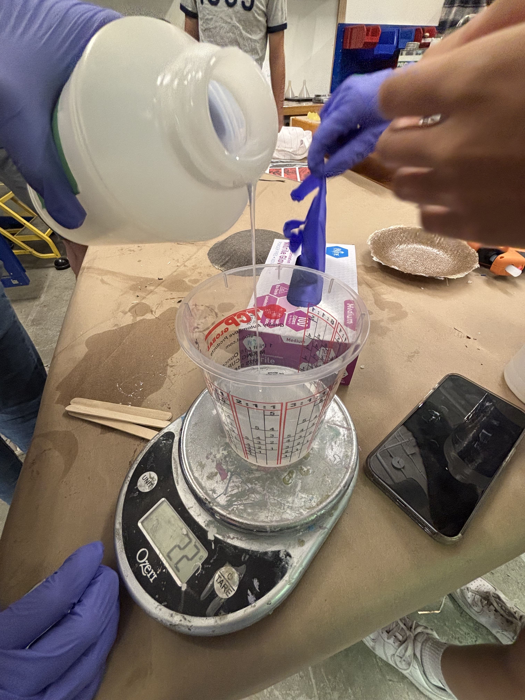
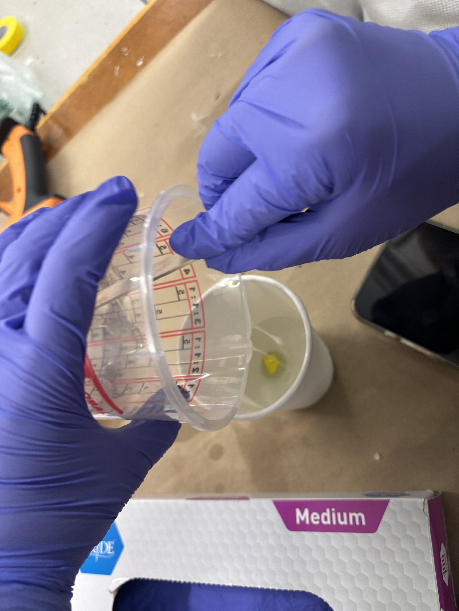
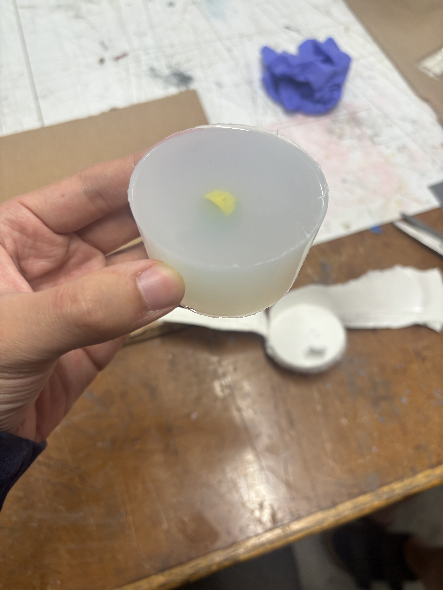
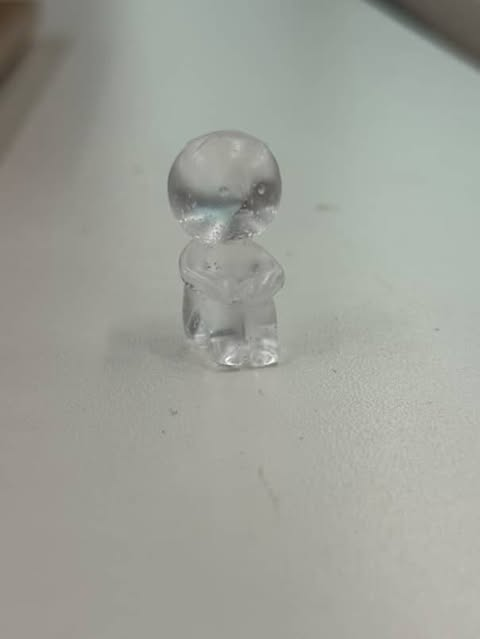

<div class="textcontainer">
<p class="margin"> </p>
<h3>Week 8: CNC Milling</h3>
<h2><b><i><u>Piano with CNC machine</h2></u></i></b></h3>
<h4> For this week's project, I wasn't sure how to use CNC for my final project. Therefore, I took a different path and decided to do a project for fun. After working with catherine and isabela, we decided to do a musical instrument -- a piano. </h4>
<p class="margin"> </p>
<img src="finishedpiano.jpg" alt="Flowers in Chania" width = 200; </img>
<p class="margin"> </p>
<h6><b> We didn't love the way it looked, so we sanded it down to get to our final product. </b></h6>
<p class="margin"> </p>

<p class="margin"> </p>
<h2><b><i><u>Process</h2></u></i></b></h3>
<h4> Catherine first made the piano model in fusion, then sent it to me and isabela to CNC. At first, we ran into multiple problems regarding thickness, but luckily Bobby was able to help us adjust our file and sucessfully cut out the cnc. We chose a 19mm thickness piece of wood to cut and our final result was successful (although a little messy). </h4><h6><b><a download href='./pianoooooo.f3d'>
Download the file here</a></b></h6>
<h6><b> This is a timelapse of the CNC. </b></h6>
<video width="400" height="400" controls>
<source src="IMG_7496.mp4" type="video/mp4"> </video>
<p class="margin"> </p>
<p class="margin"> </p>
<img src="cleaning.gif" alt="Flowers in Chania" width = 200; </img>
<p class="margin"> </p>
<h6><b> We quickly cleaned off the excess dust to view our final product. </b></h6>
<p class="margin"> </p>
<h2><b><i><u>Vacuum</h2></u></i></b></h3>
<h4> After we finished our cnc, we decided to use the vacuum forming machine to replicate the piano. We first used a screwdriver to test the mechanics, and it didn't work too well. </h4>
<p class="margin"> </p>

<p class="margin"> </p>
<h6><b> We quickly switched to our cnc project instead: </h4>
<p class="margin"> </p>
<img src="vaccum.gif" alt="Flowers in Chania" width = 200; </img>
<img src="plasticmodel.jpg" alt="Flowers in Chania" width = 200; </img>
<img src="finishedplastic.jpg" alt="Flowers in Chania" width = 200; </img>
<p class="margin"> </p>
<h2><b><i><u>Molding and casting</h2></u></i></b></h3>
<h4> For our molding and casting, we decided to create a mold of my smiski phone charm. We used silicon to first form the mold: </h4>

<img src="mixing.gif" alt="Flowers in Chania" width = 200; </img>


<p class="margin"> </p>
<h6><b> After waiting for a few hours, our silicon model solidified and we poured epoxy into it. </h4>
<p class="margin"> </p>
<img src="pouring.gif" alt="Flowers in Chania" width = 200; </img>
<img src="finished model.jpg" alt="Flowers in Chania" width = 200; </img>
<p class="margin"> </p>
<h4> Here's the final product: </h4>

</div>